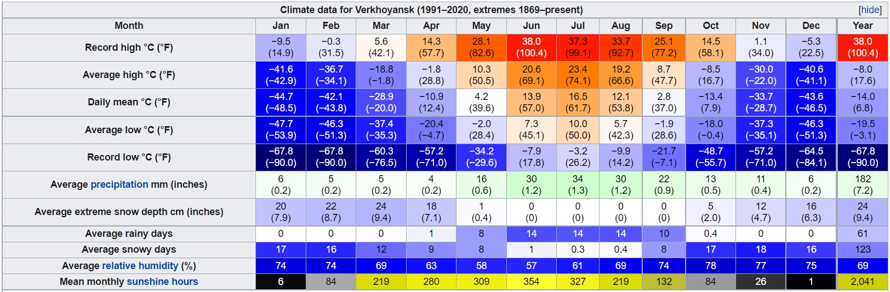

Climate
Verkhoyansk sees exceptionally low winter temperatures and some of the greatest temperature differences on Earth between summer and winter. Average monthly temperatures range from −44.7 °C (−48.5 °F) in January to +16.5 °C (61.7 °F) in July. Mean monthly temperatures are below freezing from October through April and exceed +10 °C (50 °F) from June through August, with the intervening months of May and September constituting very short transitional seasons. Despite being located within the Arctic Circle, Verkhoyansk has an extreme subarctic climate (Köppen climate classification Dfd) dominated much of the year by high pressure. This has the effect of cutting off the region from warming influences in winter and together with a lack of cloud cover leads to extensive heat losses during the cooler months.
